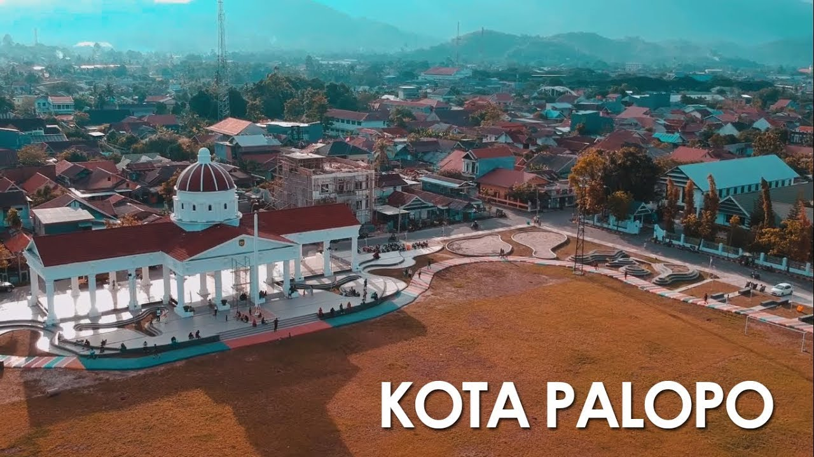
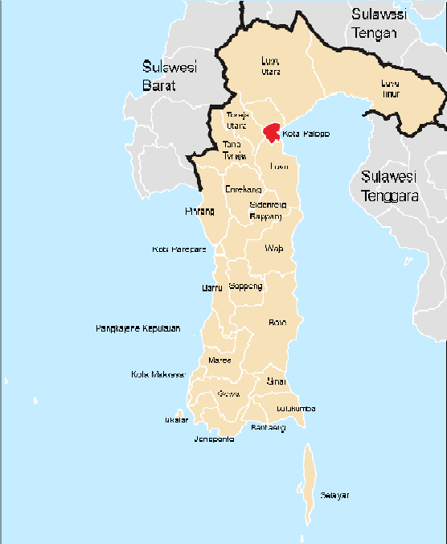

| SEKILAS TENTANG KOTA PALOPO  | ||||
|
Kota Palopo adalah sebuah kota di provinsi Sulawesi Selatan, Indonesia. Kota Palopo sebelumnya berstatus kota administratif sejak 1986 dan merupakan bagian dari Kabupaten Luwu yang kemudian berubah menjadi kota pada tahun 2002 sesuai dengan Undang-Undang Nomor 11 Tahun 2002 tanggal 10 April 2002. Menapaki perjalanan panjang yang cukup melelahkan, dengan jarak tempuh sekitar 362 Km dari Kota Makassar Propinsi Sulawesi Selatan , bukanlah hal sia-sia untuk menikmati keramahan khas sebuah kota yang menampakkan citranya melalui bentuk Kota Tujuh Dimensi yang terletak diujung Propinsi Sulawesi Selatan dengan luas wilayah 247,52 km2 , yang berbatasan dengan Kabupaten Luwu dibagian Selatan dan Utara, Kabupaten Tanah Toraja dibagian Barat dan Teluk Bone dibagian Timur. Aroma khas pegunungan, hawa pesisir pantai dari teluk yang terbentang, serta pola kehidupan masyarakat yang beraneka ragam, merupakan kesan tersendiri dari sekian banyak catatan perjalanan panjang di Kota Idaman yang menamakan dirinya Kota Palopo. |
||||
|  |
Diawal jumpa, dari arah selatan Kota Palopo terusan Kota Makassar, nuansa sejuk yang dibaluti rindangnya pepohonan dari Bukit Sampoddo seakan menyambut dengan sapaan selamat datang, bagi siapa saja yang memasuki Kota Palopo. pula dari arah barat gerbang batas wilayah Kota Palopo yang menghubungkan langsung dengan Kabupaten Tana Toraja, balutan kabut tebal di kala pagi dan senja hari, menjadi sajian khas kelokan jalan pegunungan menuju titik Kota Palopo. Dari arah utara, sebuah jembatan panjang yang diberi nama Jembatan Miring, bakal menandai kedatangan kita di keramahan Kota Idaman. Sementara di bagian timur hamparan pesisir pantai Teluk Bone, dengan khasana khas kehidupan masyarakat pesisirnya menjadi pemandangan awal tatkala kita menginjakkan kaki di Pelabuhan Tanjung Ringgit sebagai pintu gerbang pelabuhan Kota Palopo. |
|||